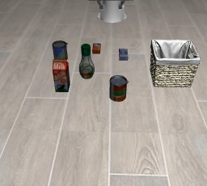
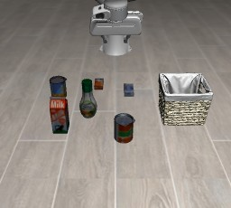
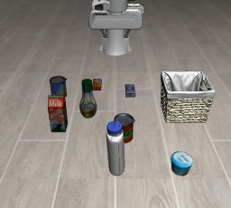
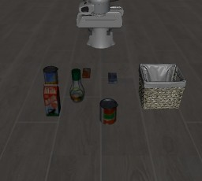
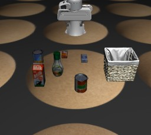
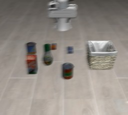
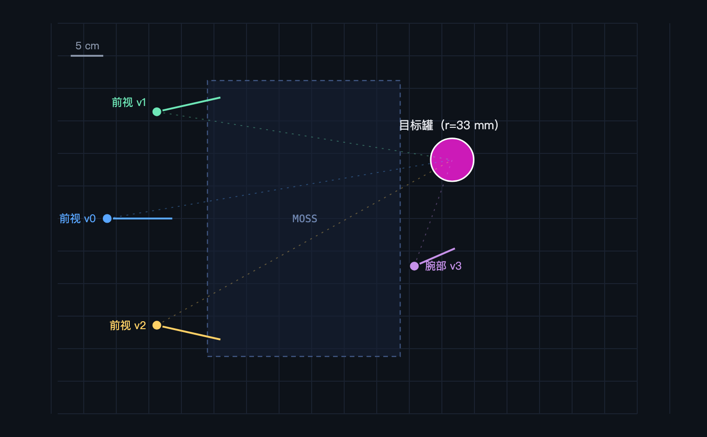
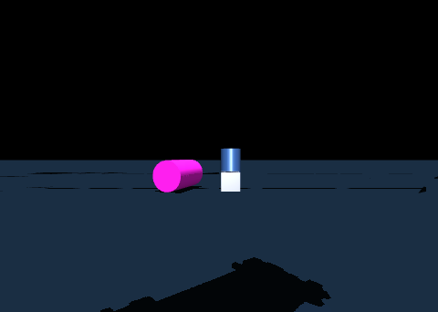
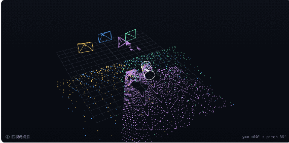

让机器人真正看见，
再用数字证明它看得准
给它几张真实渲染的 RGB-D 照片，它还你策略能直接读的位置、姿态和高度； 再把它扔进上万个被动过手脚的场景，看它什么时候会失手。 一切都跑在本地 MuJoCo 里——不需要集群，也不需要先训一个模型。
01 · 能力
三件能直接用的事
看见、量化、动起来——每一件都有可复现的数字兜底。
四张照片，六个数字
四路 RGB-D（三前视 + 一腕部）重建成桌面点云，压成目标的位置、主轴朝向、直立度和顶高——正好是策略要的那几个量。
- 检出率 100%，P95 误差 5.6 mm
- 零训练：几何算法 + 一行颜色阈值
- 端到端约 1 秒，跑在 CPU 上
把「能不能抓准」变成一张分数表
相机偏一点、灯暗一点、桌布换一块、画面糊一点，同一个抓取任务还能不能成？7 个扰动维度逐项打分，退化在哪一眼看得见。
- 物体布局 / 相机视角 / 初始位姿 / 语言
- 光照 / 背景纹理 / 传感器噪声
- 每项都带难度分级，可单独出报告
开箱就能走的机器鸭
双足机器鸭的 MuJoCo 模型、CPU 训练栈、浏览器里的实时 3D 视图，外加走、站、坐立、捡、踢球等现成策略——不训也能先看它动。
- 策略权重按版本校验，随取随用
- 浏览器打开就能拖视角看机器人
- 一台笔记本的 CPU 就能训练
02 · 效果
这些不是示意图，是它跑出来的画面










03 · 组成
一个工作区，三类东西
感知管线、评测基准、机器人本体栈放在同一个屋檐下，因为它们本来就互相需要： 视觉要在仿真里被量化，仿真管线要在真基准上被检验。
| 组件 | 给你什么 | 你怎么用 |
|---|---|---|
microduck-vision | 可复用的 RGB-D → 六元组感知管线，带误差表与失败案例 | 作为库 import，接进自己的控制环 |
LIBERO-plus | 10,030 个扰动任务与 7 维评测协议 | 拿它给你的策略打分、做鲁棒性对比 |
MicroDuck | 双足机器鸭的模型、训练栈、预训练策略、浏览器 viewer | 改行为、训新策略，或只是看它走两步 |
spin-physics-ai/
├── microduck-vision/ 感知管线（mvision）：四视角 RGB-D → 位置 / 主轴 / 直立度 / 顶高
├── benchmarks/ 鲁棒性基准（LIBERO-plus）：10,030 个扰动任务
├── robots/ 机器人本体栈（MicroDuck）：模型、训练、预训练策略
├── scripts/ 一键复原、自检、演示
└── docs/ 设计文档与安装说明上万个任务、6.4 GB 场景资产和十几个预训练权重都不随仓库走： 首次运行自动下载并校验，之后完全离线。
04 · 上手
三步，五分钟
装上
git clone https://github.com/spin-ai/spin-physics-ai.git && cd spin-physics-ai
./scripts/fetch.py # 首次运行：拉齐基准、机器人栈、预训练权重与场景资产先确认它能跑
cd microduck-vision
pip install -e ".[dev]"
pytest # 纯几何部分不需要 GPU、不需要机器人资产让它动起来
./scripts/run_liberoplus.sh python scripts/demo_video.py --live # 真 3D 窗口，实时看抓放
./scripts/run_liberoplus.sh python scripts/smoke_test_categories.py # 七个扰动维度各出图05 · 指标
用真实照片做感知，误差有多大
20 个随机场景、4 个视角、真实渲染。验收线是位置中位 10 mm、P95 25 mm——三个语义后端全部通过。
| 语义方式 | 位置 中位 / P95 | 主轴 中位 | 顶高 中位 | 检出率 | 端到端 中位 |
|---|---|---|---|---|---|
| 真值掩码（性能上限） | 2.1 / 5.6 mm | 3.0° | 1.7 mm | 100% | 1.07 s |
| 颜色阈值（默认，零训练） | 0.5 / 5.6 mm | 3.4° | 1.0 mm | 100% | 1.01 s |
| 无语义（取最大簇） | 3.7 / 10.2 mm | 3.0° | 1.2 mm | 100% | 1.17 s |
默认后端已经贴到性能上限，说明瓶颈在几何重建而不在语义识别。 把干扰物加到 4 个，无语义方案掉到 P95 114.8 mm，而颜色阈值稳在 0.4 / 5.4 mm—— 这就是为什么需要一个语义层。
06 · 许可与引用
Apache-2.0，可以放心用于商用
我们自己的代码与文档以 Apache-2.0 发布。第三方组件（基准、机器人栈、预训练权重、场景资产） 各自保留原许可，随用随取、不打包进仓库。
@misc{spin-physics-ai,
title = {spin-physics-ai: 具身智能感知与鲁棒性评测工作区},
author = {spin-ai},
year = {2026},
howpublished = {\url{https://github.com/spin-ai/spin-physics-ai}}
}